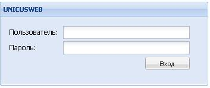
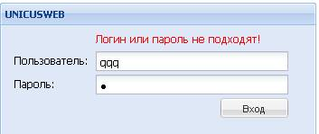
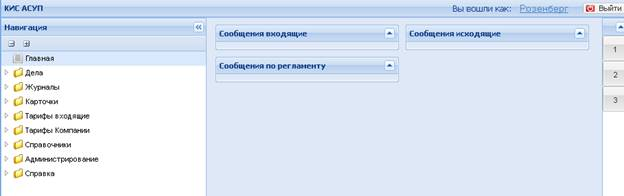
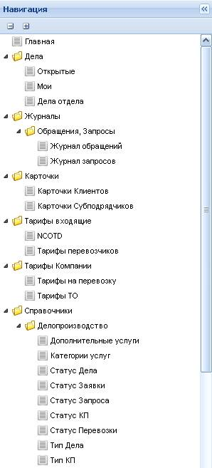
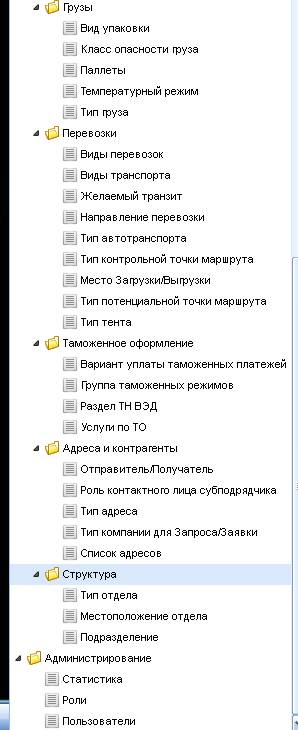
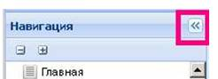
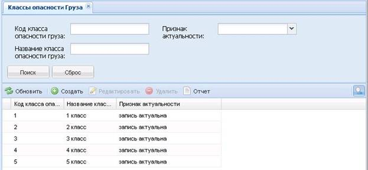
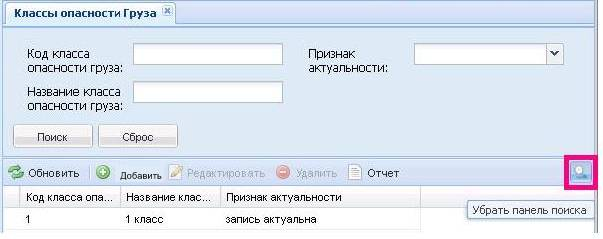

Руководство по Версии 1.0 Системы
Задачам настоящего этапа разработки Системы были:
Система находится в стадии разработки, поэтому многие модули работают не в полном объеме или только «обозначены» для лучшего понимания того, что и где будет находиться, а многие модули ветви даже и не обозначены.
Настоящее руководство по версии 1.0 Системы ни в коей мере не следует рассматривать в качестве полноценной документации на Систему не только из-за того, что Система находится в ранней стадии разработки, но и потому, что на подготовку данного Руководства Исполнителю было отведено очень мало времени. Тем не менее, в результате проверки Заказчиком Системы в ее нынешнем состоянии хотелось бы получить рекомендации, прежде всего, по реализации основных элементов интерфейса Системы.
В браузере Mazilla Firefox версии … и выше ввести ссылку
http://mm.elt-poisk.com/tirapst_0.0.1
и нажать клавишу Enter на клавиатуре. Откроется окно диалога для входа в Систему:

Ввести имя пользователя и пароль и нажат кнопку «Вход».
При некорректном вводе данных будет выдано сообщение:

При корректном вводе данных будет осуществлен вход в Систему и пользователь попадает на главную страницу Системы:

В правой части – три окна, предназначенные для отображения данных следующих списков:
Эти же списки должны будут быть доступны пользователю и при работе с любым модулем системы. Для этого предусмотрены кнопки (1,2,3) которые расположены в правой части окна. При свершении того или иного события (срабатывание таймера, получение новой горизонтальной задачи и т.д.) соответствующая кнопка будет подсвечиваться и по нажатию на нее пользователю будет показано содержание соответствующего списка. В данной версии Системы эти возможности не реализованы.
В левой части окна «дерево меню» для навигации по модулям Системы. При входе в Систему все ветви дерева свернуты. Для того, чтобы развернуть/свернуть ту или иную папку дерева нужно нужно сделать на ней даблкилик левой кнопкой мыши (или один раз щелкнуть на значке расположенном рядом со свернутой папкой или на значке , расположенном рядом с развернутой папкой.
Полный вид дерева Версии 1.0 Системы со всеми развернутыми ветвями:


Для выбора конкретной ветви дерева, реализующей соответствующий набор возможностей и перехода к соответствующему модулю системы нужно сделать даблклик левой кнопкой мыши на соответствующей ветви дерева (отмечена значком ).
Панель навигации можно скрыть для , для этого необходимо воспользоваться кнопкой, расположенной в правом верхнем углу:

|
Иконка |
Значение |
|
|
«Перечитать» - перечитать данные из базы данных (обновить данные) |
|
«Добавить» - добавить строку (запись) |
|
|
«Удалить» - удалить строку (запись) |
|
|
«Редактировать» - редактировать запись |
|
|
«Выбрать данные» - выбрать данные для ввода из предложенных локальных словарей (если для выбора используется на выпадающий список, а требуется открытие отдельной формы) |
|
|
«Удалить» - удалить данные или очисть поля ввода (отменить какое-то действие) |
|
|
«Передать» - передать (вернуть) данные в вызывавшую форму |
|
|
«Поиск» - отображать/прятать панель поиска |
|
|
«Сохранить» - сохранить результаты изменений в базе данных (форма редактирования остается открытой) |
|
|
«Копировать» - копировать выбранные данные |
|
|
|
«Сохранить и закрыть форму» - сохранить результаты изменений в базе данных и закрыть форму редактирования |
|
|
«Просмотр» - открыть отчет (документ) |
|
|
«Выход» - выход из сайта |
|
|
|
|
|
|
В окнах, обеспечивающих работу с табличным представлением данных предусмотрена возможность обеспечения поиска данных – отбора данных по заданным пользователем критериям. Для этого в таких окнах предусмотрена группа полей, в которые пользователь может ввести значения критериев для поиска. Эта группа полей размещена в верхней части таких окон. Например:

При нажатии на кнопку «Поиск» происходит выборка дынных по выбранным критериям. При нажатии на кнопку «Сброс» значения выбранных критериев поиска очищаются.
Для экономии места должна иметься возможность скрыть панель поиска:

При нажатии на эту кнопку панель поиска скрывается и остается больше места для просмотра таблицы. При желании панель поиска можно вернуть, нажав на эту же кнопку.
Примечания:
1.Возможность скрытия панели поиска реализована, пока, не во всех
формах данной Версии Системы. На те формы, где она не
реализована она будет распространена. Кроме того, в некоторых формах, например
в формах работы с тарифами, для скрытия панели поиска используется другая
кнопка – в этих формах она будет заменена на стандартную
.
2. В формах работы с тарифами возможности поиска данных, пока не
реализованы или реализованы не до конца.